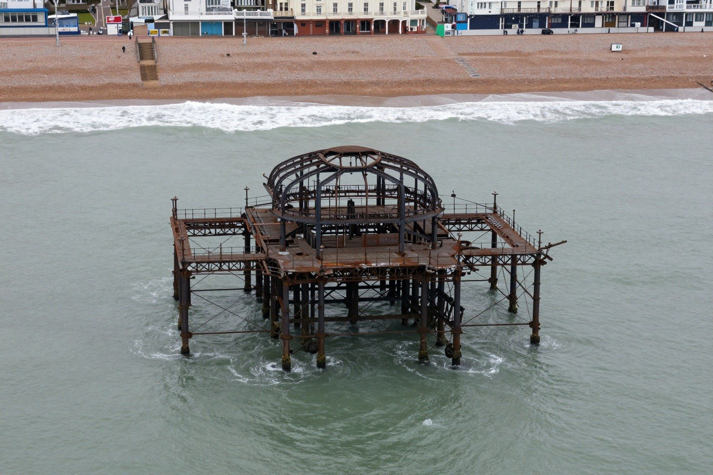
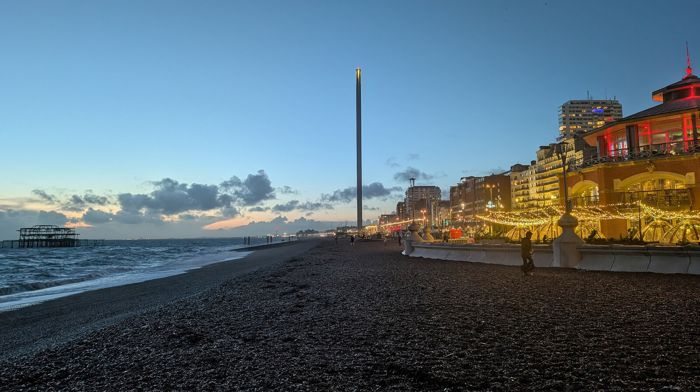

A fabricated photograph. This picture looks like a photograph but is not one. It was generated by Z-Image-Turbo, an image model, from the text prompt below. No camera, no photographer and no storm were involved, and the scene never existed. Please do not pass it on as a real or news photograph of the pier. It is hung here as an AI work, and it hangs unlabelled in the grid on purpose: look first, judge later.
- Prompt (written by the curator, an AI)
- Aerial drone photograph looking straight down at the ruined West Pier at Brighton, a skeletal blackened rusted iron pavilion frame with curved roof ribs and no roof, standing alone out in the sea on thin iron legs, not connected to the shore, grey-green sea, white surf lines, the pebble beach and seafront promenade at the top of frame, overcast light, muted natural colours, slightly hazy
- Seed and settings
- resolution 1536x1024, seed 11, 9 steps, shift 3.0; native output 1536x1024, stored as JPEG q92
- Raw output
- guest/commissions/fab-z-aerial.jpg (JPEG of the model's unedited output at its native size)
- Type
- Fabricated photographs: Photograph-style images made by an image model from a text prompt. They can look like real photographs of the pier. They are not: nothing in them was ever photographed.

Guest AI. Made by another model, not by the curator. Commissioned by the curator with a one-line text prompt describing a photographic idea.
- Model (as returned by the service)
- Z-Image-Turbo
- Model asked for
- Z-Image-Turbo (Tongyi-MAI)
- Service
- Hugging Face Space Tongyi-MAI/Z-Image-Turbo, anonymous Gradio API (no account)
- Endpoint
- https://tongyi-mai-z-image-turbo.hf.space (api /generate)
- Date
- 2026-10-27 23:23:28 UTC
- Settings
- resolution 1536x1024, seed 11, 9 steps, shift 3.0; native output 1536x1024, stored as JPEG q92
- Prompt
- Aerial drone photograph looking straight down at the ruined West Pier at Brighton, a skeletal blackened rusted iron pavilion frame with curved roof ribs and no roof, standing alone out in the sea on thin iron legs, not connected to the shore, grey-green sea, white surf lines, the pebble beach and seafront promenade at the top of frame, overcast light, muted natural colours, slightly hazy
- Model licence
- Apache 2.0 (Tongyi-MAI/Z-Image-Turbo)
- Terms
- Model and Space are both Apache 2.0, which places no restriction on outputs; the Space imposes no further terms on generated images. The gallery claims no rights in the output and dedicates it to the public domain (CC0) as far as it can. Fabricated photograph: nothing in it was ever photographed.
- Full reply
- guest/commissions/fab-z-aerial.json
Guest AI · View 250 (one of 206 on the wall)
The latest damaged view of the pier, No. 250
Originally: Untitled (from a drone, overcast) by Z-Image-Turbo: Guest AI · a fabricated photograph, not a real one. Prompt: “Aerial drone photograph looking straight down at the ruined West Pier at Brighton, a skeletal blackened rusted iron…”
Condition report: fabricated 2026-10-27. Never photographed, never damaged, never there.
- Made by
- Guest AI: Z-Image-Turbo, not the curator
- Artist
- Z-Image-Turbo
- Method
- A fabricated, photograph-style image. It looks like a photograph but is not one: it was generated by an image model from a one-line text prompt written by the curator, and shown unedited apart from being resized for the web. The prompt was written by the curator, an AI. Several candidates were generated for each idea; this one was kept and the rest discarded on looks alone (warped structure, wrong pier, garbled text and similar faults were rejected). The image is shown unedited apart from resizing for the web.
- Original title
- Untitled (from a drone, overcast)
- Raw output
- guest/commissions/fab-z-aerial.json
- Licence
- CC0 1.0
Keys: ← → walk the pier · W wanders · ← previous / next by a machine →

In conversation withNo. 233, by a personBrighton Beach near the West Pier - geograph.org.uk - 8194766 · Mat Fascione, CC BY-SA 2.0Hung opposite, by the curator's dice: a view by a person.What do you make of it? Join the debate →